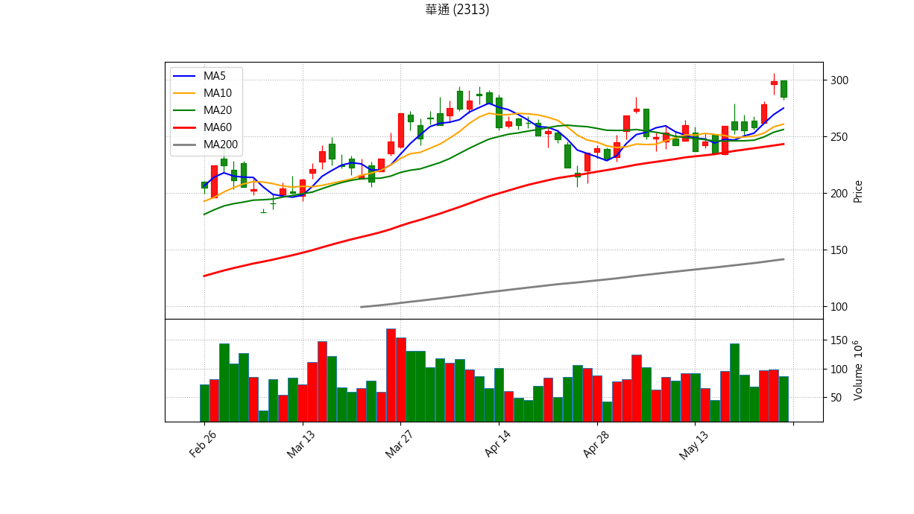

📊 股票庫存 出場與 AI 綜合診斷報告
分析時間: {datetime.now().strftime("%Y-%m-%d %H:%M:%S")}
結合量化條件與 Gemini AI 綜合技術分析
世德 (2066)
最新收盤價: 57.70 (更新時間: 2026-05-26 23:27)
💼 庫存狀態
買進均價：98.03
庫存股數：3000
預估損益：-120,990
報酬率：-41.14%
📋 量化診斷結果
✅ 目前未觸發明顯技術面出場條件，可依紀律續抱。

藍線: 5MA, 橘線: 10MA, 綠線: 20MA, 紅線: 60MA, 灰線: 200MA
Gemini 綜合診斷
華通 (2313)
最新收盤價: 284.50 (更新時間: 2026-05-26 23:27)
💼 庫存狀態
買進均價：287.34
庫存股數：210
預估損益：-596
報酬率：-0.99%
📋 量化診斷結果
✅ 目前未觸發明顯技術面出場條件，可依紀律續抱。

藍線: 5MA, 橘線: 10MA, 綠線: 20MA, 紅線: 60MA, 灰線: 200MA
Gemini 綜合診斷
美隆電 (2477)
最新收盤價: 20.90 (更新時間: 2026-05-26 23:28)
💼 庫存狀態
買進均價：27.10
庫存股數：2000
預估損益：-12,400
報酬率：-22.88%
📋 量化診斷結果
💀 【跌破季線且季線下彎】生命線斷裂，絕對停損訊號！

藍線: 5MA, 橘線: 10MA, 綠線: 20MA, 紅線: 60MA, 灰線: 200MA
Gemini 綜合診斷
安勤 (3479)
最新收盤價: 134.00 (更新時間: 2026-05-26 23:28)
💼 庫存狀態
買進均價：103.06
庫存股數：500
預估損益：15,470
報酬率：30.02%
📋 量化診斷結果
✅ 目前未觸發明顯技術面出場條件，可依紀律續抱。

藍線: 5MA, 橘線: 10MA, 綠線: 20MA, 紅線: 60MA, 灰線: 200MA
Gemini 綜合診斷
力智 (6719)
最新收盤價: 273.50 (更新時間: 2026-05-26 23:29)
💼 庫存狀態
買進均價：224.00
庫存股數：1000
預估損益：49,500
報酬率：22.10%
📋 量化診斷結果
✅ 目前未觸發明顯技術面出場條件，可依紀律續抱。

藍線: 5MA, 橘線: 10MA, 綠線: 20MA, 紅線: 60MA, 灰線: 200MA